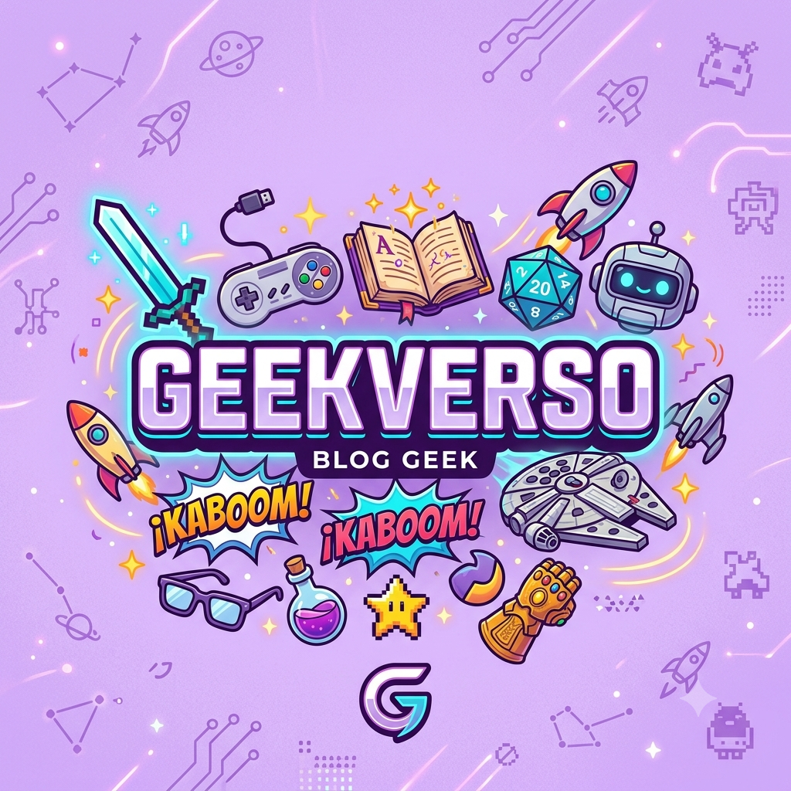

Bem-Vindo a meu blog vamos falar sobre algumas curiosidades?!
Por: Luís Miguel Moreira Forghieri
Bom dia! Sejam muito bem-vindos ao meu blog sobre a area!
Tudo bem? hoje iremos falar mais sobre geek e curiosidades de herois e muitas outras coisas,como hq’s filmes e tudo relacionado à cultura geek